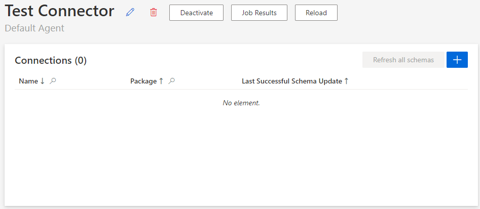
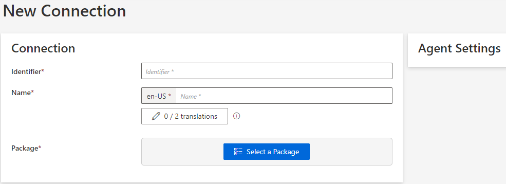

Create a Connection
How to create a Connection inside a Connector and choose the appropriate package.
Overview
A connection is the information that allows to connect to a managed system, which includes credentials and path.
There is a minimum of one connection per connector. In many cases, there is one connection to Synchronize Data and one connection for Provision.
A connection is associated with a package, representing the technology to use for the data transfer.
Participants and Artifacts
For a given managed system, integrators may need the help of the application owner who knows the purpose of the application.
| Input | Output |
|---|---|
| Connector container(required) Connector model(required) |
Connection(s) |
See the Create the Connector and Model the Data topics for additional information.
Create a Connection
Create a connection by proceeding as follows:
-
Click on the addition button in the Connections frame on the connector's summary page.

-
Fill in the connection information fields on the left, then select a package (AD, CSV, etc.) and fill the associated agent settings on the right.

Identifier: must be unique among connections, without any whitespace, start with a letter, and contain only letters, numbers,.and/or-.Name: will be displayed in the UI to identify the connection.Package: the technology that enables the connection. Choose the package that fits best the managed system. See details below.Agent Settings: depends on the selected package.
Then click on Create & Close.
Select a package
A package is chosen according to the following constraints:
-
What kind of technologies do we need?
An Active Directory, a plain CSV file, etc.
-
Do we need incremental or complete synchronizations, or both?
Incremental synchronizations, usually launched approximately every two hours, are to be performed for real-time needs, while complete synchronizations, scheduled no more than once a day, will recover any changes that may have slipped through the cracks of the incremental synchronizations. See the Upward Data Synchronization topic for additional information.
-
Do we need Provision? If so, should provisioning be performed manually or automatically by Identity Manager?
NETWRIX recommends starting by creating a connector that only does synchronization, and do not worry yet about provisioning. It allows Identity Manager to read data from your managed system, without writing to the system.
One connector can contain several connections, and each connection contains one package.
For example, an
ADconnector, that will handle synchronization and provisioning between Identity Manager and an AD, would generally use theDirectory/Active Directorypackage which can do synchronization and automated provisioning. A second package for manual provisioning,Ticket/Usercubecould be added to request manual provisioning of administration accounts that need more security.
Each type of package needs its own settings, and secured options can be used to store sensitive connection information. See the Connections topic for additional information.
Refresh Schemas
A schema is a snapshot of the data structure (metadata) retrieved by a connection. It needs to be refreshed to enable the configuration of entity types and resource types.
Identity Manager refreshes a connection's schema:
-
after the connection creation;
-
when clicking on Refresh Schema on the connection's page: only the schema of the current connection is refreshed;

-
when clicking on Refresh all schemas on the connector's page: all schemas of the connector are refreshed.

In the Connections frame, either the last successful schema update is indicated or an icon is shown if the refresh schema failed.

Some packages don't generate a schema. For these packages, the Refresh Schema button isn't displayed on the connection's page. On the connector's page, a connection without schema is indicated by the sentence "There is no schema for this connection".

The connections' schemas must be refreshed before editing the connector's entity types via the UI, whether the connections were created via the UI or XML configuration. Otherwise, there will be no connection table available in the Source dropdown, so you will not be able to save anything.
Impact of Modifications
Changes on a connection may imply changes in the connector's entity types. When a connection schema changes, a warning may appear in the entity type screen indicating that a mapped property doesn't exist anymore.
Verify the Connection
In order to verify the process:
-
click on Check Connection to ensure that Identity Manager can reach the managed system;

Some connectors have both incremental and complete setting modes. See the Jobs topic for additional information. They are relatively independent so they both need to be tested.
-
check that the connection appears in the Connections frame with the right options, and without the Failed icon.
Troubleshooting
If the Failed icon appears, then:
Ensure that the schema of the connection is refreshed.
If the schema couldn't be recovered, then:
-
Ensure that the managed system is properly connected.
-
Check the connection's settings.
Example: For a CSV connection, ensure that the file paths are written correctly in full, such as
C:/UsercubeDemo/Sources/Directory.xlsx.
You may have a schema that could not be recovered if you work with a system without a direct access to the agent. In this case, schema refreshment will fail but that does not mean that there necessarily is a problem.
Try again from a system that can access the agent.